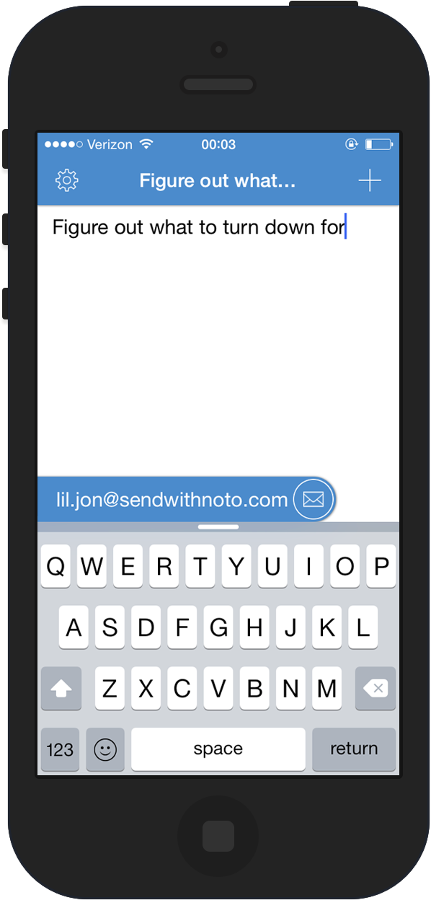

why nōto
Note-taking apps should get your idea in writing as soon as possible - no digging through menus or tapping around.
With nōto, start typing instantly and simply swipe to email yourself a note.
Triage your notes in inbox, or integrate with services like Evernote - there's no right way to take notes, except quickly.


about
Nōto was built by The Leather Apron Club, a collective of technologists, writers, and eternal-students, to make our lives easier.
Talk to us at @SendWithNoto.